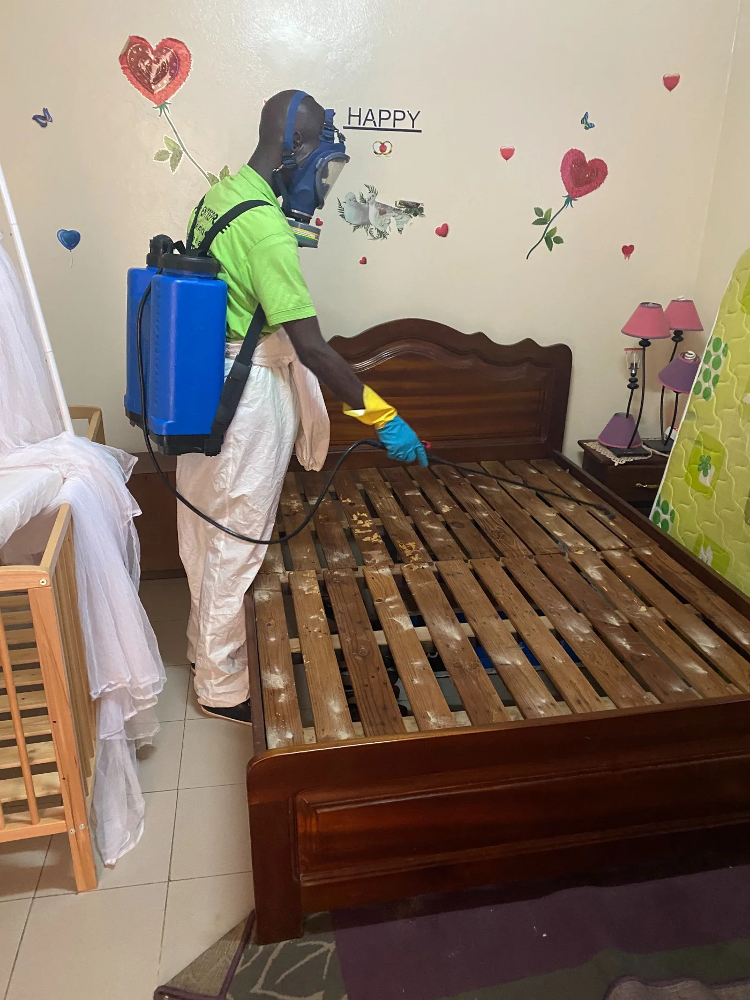
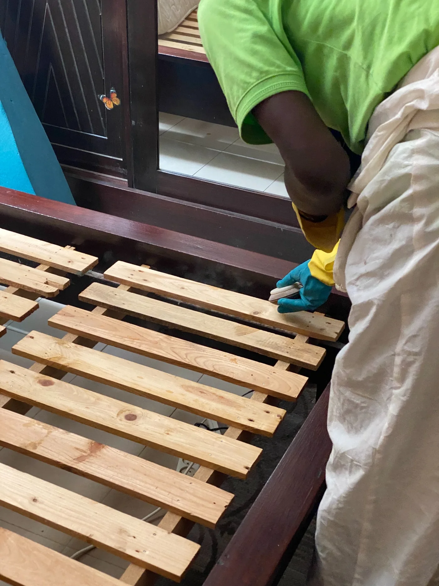
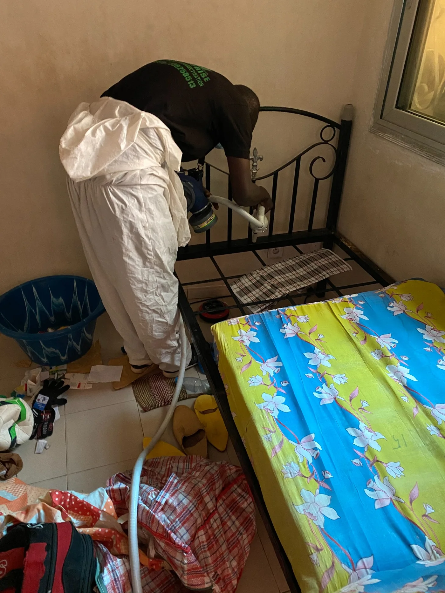

SawaraEntreprise
77 552 64 19
Devis WhatsApp
WhatsApp
Les punaises de lit peuvent rapidement envahir une chambre, un matelas, un canapé ou un appartement meublé. Sawara intervient à Dakar pour identifier les zones touchées, appliquer un traitement adapté et vous conseiller sur les gestes à suivre avant et après l’intervention.

Les punaises de lit se cachent dans les coutures de matelas, les sommiers, les têtes de lit, les canapés, les fissures, les plinthes et parfois les bagages. Elles peuvent être introduites après un voyage, un déménagement, un séjour dans un logement infesté ou l’achat de meubles d’occasion.
Elles piquent surtout la nuit et peuvent provoquer des démangeaisons, des boutons, de l’anxiété et une gêne importante dans le logement. Un traitement sérieux commence toujours par l’identification des zones réellement touchées.

Sawara intervient avec un protocole professionnel adapté à la configuration du logement. Le traitement cible les zones sensibles : matelas, sommier, cadre de lit, tête de lit, canapés, plinthes, fissures et recoins proches du couchage. L’objectif est de traiter les zones touchées, de limiter la dispersion et de conseiller le client sur les gestes à suivre avant et après l’intervention.

Il est tentant de pulvériser un insecticide partout, de déplacer le matelas ou de sortir les meubles immédiatement. Mais ces gestes peuvent disperser les punaises de lit dans d’autres pièces et rendre le traitement plus compliqué.
Sawara intervient principalement dans le Grand Dakar. Des déplacements sont possibles selon la nature de la demande, l’urgence et l’organisation du déplacement.
Dakar centre : Plateau, Médina, Fann - Point E, Mermoz, Sacré-Cœur, Ouakam - Ngor, Almadies.
Banlieue : Pikine, Guédiawaye, Parcelles, Thiaroye, Rufisque, Bargny.
Sur demande : Thiès, Mbour - Saly, Diamniadio, Saint-Louis, autres zones.
Les questions que posent le plus souvent nos clients avant une intervention.
Piqûres au réveil, petites traces noires sur le matelas, taches de sang sur les draps, démangeaisons ou présence de petits insectes près du lit peuvent indiquer une infestation. Un diagnostic permet de confirmer la situation.
Non. Elles peuvent aussi se cacher dans le sommier, la tête de lit, les canapés, les fissures, les plinthes, les prises proches du lit, les bagages ou certains meubles proches du couchage.
Selon la configuration du logement et le type de traitement appliqué, une absence temporaire peut être conseillée. Sawara vous donne les consignes précises avant l’intervention.
Le prix dépend de la surface, du niveau d’infestation, du nombre de pièces touchées et de l’urgence. Le plus simple est d’envoyer une photo ou de décrire la situation pour obtenir un devis adapté.
Pas toujours. Les punaises de lit sont résistantes et peuvent se cacher dans des zones difficiles d’accès. Selon le niveau d’infestation, un suivi ou une deuxième intervention peut être recommandé.
Il faut éviter de déplacer le matelas ou les meubles sans conseil. Sawara vous indique les gestes à faire avant l’intervention pour limiter la dispersion et faciliter le traitement.
Oui. Sawara intervient pour les particuliers, hôtels, auberges, appartements meublés, résidences et bailleurs qui souhaitent traiter une chambre ou plusieurs logements.
Vous pensez avoir des punaises de lit dans une chambre, un appartement meublé, un hôtel ou un logement familial ? Envoyez une photo ou décrivez la situation sur WhatsApp. Sawara vous oriente vers la solution la plus adaptée.
77 552 64 19 — WhatsApp